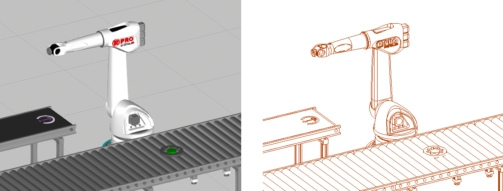
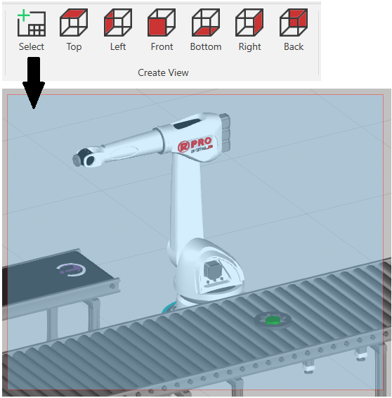
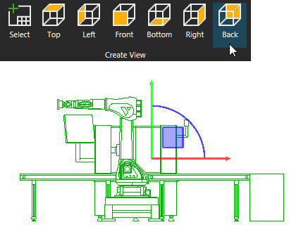
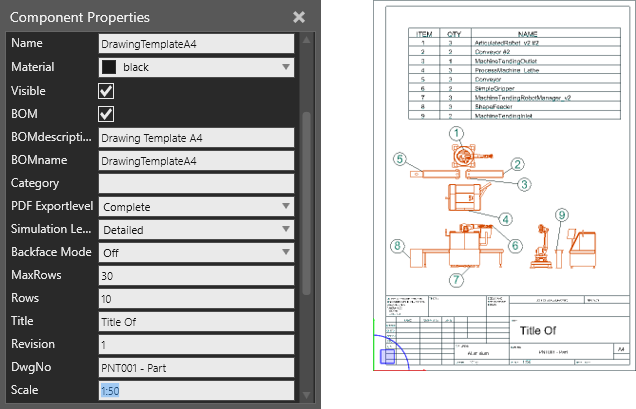
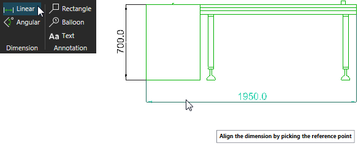
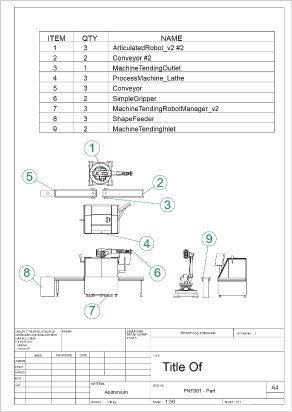

A drawing is a view of the current layout in the 3D world represented as sets of lines.

In the Drawing view, you can create new drawings manually or automatically.


Every drawing has a Scale property, which you can read/write in the Properties panel. If you want to control the scale of drawings, import a drawing template. By using a drawing template, you are able to create a print-ready technical drawing as well as a parts list/bill of materials. Every component has a set of BOM properties that are used to populate a bill of materials table in a template.

If you want to add dimensions and annotations to a drawing:

Everything in the drawing world is a layout item that has its own set of properties. What is a layout item? A layout item is a visual object that is not a component and is saved in a layout. This means your drawings, annotations and dimensions are generated every time you load the layout in the 3D world.
You cannot save a drawing separately from a layout. You can, however, print and export drawings.
